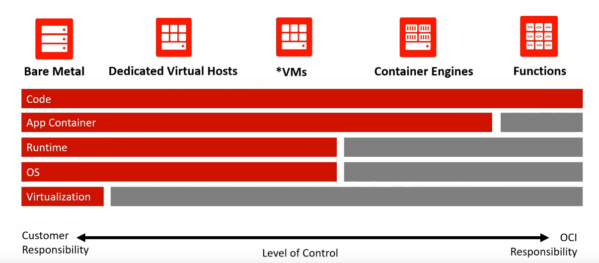
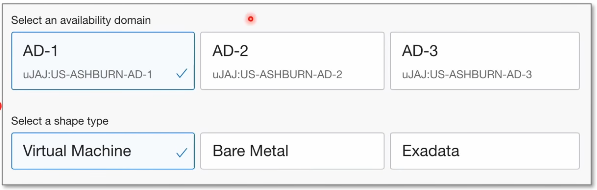
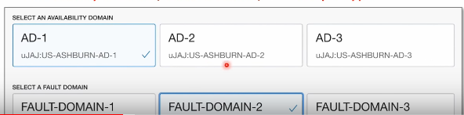
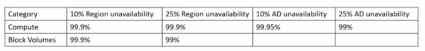
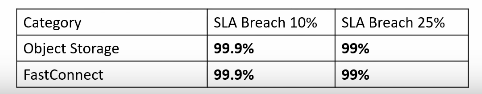

Cloud Hosting
Multiple physical machines that act as one system. The system is abstracted into
multiple cloud services
- Flexible
- Scalable
- Secure
- Cost-Effective
- High Configurability
Orcle calls their service provider Oracle Cloud Infrastructure or Oracle Cloud or OCI
Advantages of cloud Computing
- You pay only for what you consume, no up front cost
- Launch workloads anywhere in the world
- Thousands of customers sharing the cost
- Detailed monitoring, Easy to launch and experiment
- Resources are elastic, grow and shrink based on demand
- With a few clicks and a few minutes entire infrastructure, launched in minutes instead of weeks or months
Types of cloud Computing
-
Sass Software as a Service - For customers
- A product that is run and managed by the service provider
- Don't worry about how the service is maintained
- It just works and reamins available
-
Pass Platform as a Service - For Developers
- Focus on the deployment and management of your apps.
- Don't worry about, provisioning, configuring or understanding the hardware or OS.
- Examples of this would be Google App Engine whre the developer can just deploy
the app and does not have to worry about managing the network, OS memory etc.
-
Iaas Infrastructure as a Service - For Admins
- The basic building blocks for cloud IT. Provides access to networking features,
cimputers and data storage space. Don't worry about IT staff, data centers and hardware.
- Examples of this would be AZURE, AWS, GOOGLE CLOUD compute engine whre you have access
to the OS and are able to configure it the way that you want.
Cloud Deployment Models
- Cloud-Native: Everything built on the cloud
- Hybrid-Architecture: Using both On Premise and the Cloud meaning your Data
center Communicates with the cloud.
- Cross-Cloud: Using multiple cloud providers aka multi-cloud, hybrid-cloud
Cloud Architecture Terminologies
-
Availability: The ability for a service(web application) remains available
- If a service has a high Availability we would call it Highly Available
- Scalability - the ability to grow rapidily or unimpeded
- Elasticity - The ability to shrink and grow to meet the demand
- Fault Tolerance - The ability to prevent a failure
- Disaster recovery - The ability to recover from a failure Highly Durable(DR)
High Availability
Your ability for your service to remain available by ensuring there
is no single point of failure and/or ensure a certain level of performance.
-
Example 1:
Run server in more than one data center just in case if of
of the servers fail than you can direct traffic to one of the other servers.
-
Example 2:
Running your workload across multiple Availability Domains
ensures that if 1 or 2 ADs becomes unavailable your service/applications remains
available in one of the other services.
- Usually there are 3 ADs available
-
Oracle Load Balancer: A load balancer allows you to evenly distribute traffic to multiple
servers in one or multiple datacenters. If a datacenter or server becomes unavailable (unhealthy) the
balancer would route the traffic to only healthy datacenters and servers.
-
High Scalability: Your ability to increase your capacity based on the increasing demand
of traffic, memory and computing power
-
Vertical Scaling: Scaling Up meaning to upgrade to a bigger server
-
Horizontal Scaling: Scaling out Add more servers of the same Specialiezed
-
High Elasticity: Your ability to Automatically increase or decrease your capacity based on
the current demand of traffic, memory and computing power.
-
HE uses Horizontal Scaling to:
-
Scale out: Add more servers of the same size
-
Scale in: Remove more servers of the same size
-
Vertical Scaling is generally hard for traditional architecture so you'll
usually only see horizontal scaling described with Elasticity
-
Autoscaling Configuration: In OCI you can configure scaling rules for your instances with
Oracle Autoscaling configuration.
-
Fault Tolerant: Your ability for your service to ensure there is no single point of failure.
Preventing the chance of failure.
-
A common example is having a copy (slave) of your database where all ongoing changes are synced.
The Slave is not in-use until a fail over occurs and it becomes the primary database.
-
High Durability: Your ability to recover from a disaster and to prevent the loss of data. Solutions
that recover from a disaster is known as Disaster Recovery(DR)
- Questions you should be asking are the following:
- Do you have a backup?
- How fast can you restore that backup
- Does your backup still work?
- How do you ensure current live data is not corrupt?
-
Total Cost of Ownership(TCO)
- CAPEX: Capital Expenditure
- Buildings
- Vehicles
- Hardware
- Equipment
- Land
- OPEX: Operational Expenditure
- Products
- Business
- Systems
-
The evolution of Computing - Dedicated
-
Bare metal Machines * Dedicated
- A physical server wholly utilized by a single customer
- You have to guess your capacity, you'll overpay for and underutilized server.
- You are limited by your Operating System
- Multiple apps can result in conflicts in resource sharing
- You have a *guarantee of security, privacy and full utility of underlying resources
-
VMs
- You can run multiple Virtual Machines on one machine
- Hypervisor is the software layer that lets you use the VMs
- A physical server shared by multiple customers
- You are paying for a fraction of the server
- You'll overpay for and underutilized Virtual Machine
- You are limited by your Guest Operating System
- Multiple apps on a single Virtual Machine can result in conflicts in resource sharing
-
Containers
- Virtual Machine running multiple containers
- Docker Deamon is the name of the software layer that lets you run multple containers
- You can maximize the utility of the server, utilize the available capacity which is more cost efferctive
- Your containers share the same underlying OS so containers are more efficient that multiple VMs
- Multiple apps can run side by side without being limited to the same OS requirements and will not cause conflicts during resource sharing
-
Functions
- A managed VMs running managed containers
- Known as Serverless Compute
- You upload a piece of code, choose the amount of memory and duration
- Only responsible for code and data, nothing else
- Very Cost-Effective, only pay for the time code is running, VMs only run when there is code to be executed
-
Cold Startss is a side-effect of this setup -- meaning that there is a startup before running the code
Example: like pressing the button to run the code editors like visual studio
OCI Global Infrastructure
-
Regions: is a geographically distinct location that has many datacenters(Availability Domains) or Localized geographical area
-
OCI has 21 regions and are planning to have 15 more
-
There are 3 kinds of Regions
- Commercial: Any customer can launch resources in these regions
- Government: Only Governments can launch resources in these regions
- Azure Connected Some commercial regions are connected to Azure
-
Availability Domains (ADs)
-
An Availability Domain(AD) is what OCI calls a datacenter
- A datacenter is a secured building that contains hundreds of thousands of computers
- A region will generally contain 3 datacenters
-
Datacenters within a region will be isolate from each other (so different buildings). But they will be close enough
to provide low-latency
-
Its common practice to run workloads in at least 3 Ads to ensure services remain available in case one or two
datacenters fail. (High Availability)
-
Not all OCI regions have 3 ADs on OCI. Its common strategy for cloud providers to initially launch a new region with
a single datacenter and add more later. (1-5 years)
-
Fault Domains(FDs)
- A fault domain is what OCI calls a logical datacenter
- A logical datacenter is like a virtual/abstract datacenter within a physical datacenter
-
An availability Domain (physical datacenters) contains resources such as infrastructure and hardware and some of those
resources are logically grouped together and made accessible to you within the Oracle Console.
-
Having an abstraction on top of a physical datacenters allows the cloud provider to layer in between logical security
controls and monitoring tools and fault tolerance
-
Fault is in the name for a reason
-
A fault domain's primary purpose is to isolate groupings of hardware within a datacenter so they
don't share a single point or failure
OCI Concepts
-
Console
-
The console is the simple and intuitive web-based user interface you can use to access and manage Oracle Cloud Infrastructure.
-
Tenancy
-
It’s a secure and isolated partition within OCI where you can create, organize, and administer your cloud resources
-
Compartments
-
It’s a logical collection of related resources that can be accessed only by certain groups that have been given permission by and administrator.
A resource would be the cloud services provided by OCI eg. Instance, VCNs and Block Volumes
-
Root Compartment
-
Oracle creates you a tenancy on signup and that is also known as your root compartment that holds all of your cloud resources.
- You can nest compartments six levels deep
- You can add or delete components whenever
- Compartments are not region specific so you can group resources across region.
- Resources can be easily moved to other compartments
- Compartment resources can interact with each other
- You can apply Polices to Compartment to determine user access
- You can associate a compartment to a budget for cost analysis
-
Oracle Cloud IDS (OCIDs
-
Is a unique ID assigned by oracle to your cloud resources. OCIDs are used in Policies and OCI API to reference specific cloud resources.
- Format of OCIDs: Ocid1.<Resource Type>.<Realm>.[Region].[Future use].<unique id>
- Tenancy Example: Ocid.tenancy.oc1..aaaaaaaaaaba
- Instance Example: Ocid1.instance.oc1.phx.abuw
-
Programmatic Access (API, CLI, SDK, and Cloud Shell)
-
-
Application Programming Interface is a way to interact with cloud services programmatically
-
Command Line Interface (CLI) Access the API via the Shell Terminal Program
-
Cloud Shell a web browser-based terminal accessible from the Oracle Cloud Console. Cloud Shell is free to use
(within monthly tenancy limits), and provides access to a Linux shell, with a pre-authenticated Oracle Cloud Infrastructure CLI
-
Software Development Kit(SDK) is a set of programming libraries available in common languages to interact with Oracle Cloud Services
-
You can gain programmatic access to OCI API by uploading your private/public key.
Core Services
Computing Services
-
Virtual Machines
-
A multi-tenant server running a Hypervisor layer. Choose your OS Virtual Image and launch your server. You share the cost with other
customers so you save money.
-
Container Engines
-
Docker as a Service. Allows you to run docker containers on a virtual machine.
-
Functions
-
Serverless compute You just upload your code, and the cloud provider takes care of the res. Code is designed to run for a short period of time
and you choose a managed container with a runtime.
-
Dedicated Virtual Hosts
-
A single-tenant server that is running a hypervisor layer where you can run multiple Virtual Machines. You don't share the server with anyone else, so greater security
and performance are guaranteed
-
Bare metal
-
A dedicated server that has no hypervisor layer. Bare metal allows you to provide your applications with direct access to the proessor and memory resources of the underlying server.
This is suited for specialized workloads where hypervisor would hinder performance.
-
Level of control from Customer Responsibility to OCI Responsibility
-

Storage Services
-
Block Volume
-
Think of it like having a local virtual drive where you can choose HDD of SSD.
Data is split into evenly split blocks, directly accessed by the Operating System. Supports only a single write volumne.
-
Local NVME
-
Non-Volatile-Memory-Express is a Transfer Protocol for SSD that allows the dirve to operate very efficiently
-
File Storage
-
Uses a files system NSFv3 allowing multiple connections to the same storage device at the same time.
- File is stored with data and metadata
- Multiple connections via a network share
- Supports multiple reads, writing locks the file
-
Object Storage
-
Serverless storage. Uplaod as many files as you like, scales without worrying about running out of space or data loss
- Object is stored with data, metadata and Unique ID.
- Scales with limited, no file or storage limit
-
Archive Storage
-
Long-term cold storage. Files you need to keep aroud for years that you infrequently need to access at a fraction of the storage cost.
Networking Services
- Region: the geographical location of your network
- ADs the datacenter of your AWS resources
- FDs a logical grouping of resources in your datacenter
- VCN(Virtual Cloud Network) a logically isolated section fo the OCI Cloud where you can launch OCI resources
- Internet Gateway Enable access to the internet
- Subnets a logical parition of an IP network into multiple smaller network segments
- Virtual Firewall Options
- Security Rules
- Network Security Groups (NSGs)
- Security Lists

- Services Gateways: A secure tunnel that keeps traffic within the OCI Network
- NAT Gateway: Let resources in a private subnet reach the internet
- IPSec VPN: A secure connection to your on-perm to Oracle Cloud
- Fast Connect: A dedicated secure connection to your on-perm to Oracle Cloud
- Dynamic Routing Gateway: A virtual router that provides a path for private traffic between your VCN and outside network
-
VCN Peering: Create a network connection between VCNs

Virtual Cloud Networks and Subnets
- Virtual Cloud Network(VCNs) a logically isolated section of the OCI Cloud where you can launch OCI Resources. You can choose a range of Ips using CIDR Range
- CIDR Range of 10.0.0.0/16=65536 IP Addresses
-
Subnets: a logical partition of an IP network into multiple smaller network segments. You are breaking up your IP range for VCNs into smaller networks.
- Subnets need to have a smaller CIDR range than the VCNs represent their portion. Subnet CIDR Range 10.0.0.0/24 = 256 IP Addresses
- A public subnet is one that can reach the internet
- A private subnet is one that cannot reach the internet
Virtual Network Interface Cards (VNICs)
- Virtual Network Interface Cards (VCINs) enables an instance to connect to a VCN and determines how the instance connects with endpoints inside and outside the VCN.
- Without VCIN your Instance (server) would not be able to communicate with the Internet or other network cloud services.
Virtual Network Interface Cards(VNICs)
Enables an instance to connect to VCN and determines how
the instance connects with endpoints inside and
outside the VCN
Without VCIN your Instance server would not be able to
communicate with the Internet or other network cloud
services.
Virtual Firewall Options (SLs and NSGs)
The networking service offers two virtual firewall features
that both uses security rules to control traffic at the
packet level. The two features are:
- Security Lists(SLs)
- The original virtual firewall feature from the Networking service.
Security Lists are associated with subnets and the security rules
apply to VCINs in those subnets
- Network Security Groups(NSGs)
-
The new virtual firewall feature designed for application components
that have different security postures. NSGs are supported only for specific
services. NSGs are directyly associated with VCINs regardless of what subnet
they are in.
Database Services
-
VM DB Systems
Fast Provisioning
-
- A Virtual Machine running a managed Oracle DataBase Instance Uses Block Storage
-
VM BM Systems
Fast Performance
-
A Bare Metal machine running a managed Oracle Database Instance Uses Fast Local Storage
-
Oracle RAC
Highly Available
-
Oracle Databases running as a cluster. Shares the same disk but different
instances running on different nodes. If a node fails, connection fails over
to another node.
-
Exadata DB Systems
Specialiezed Infrastructure
-
Exadata is a pre-configured combination of hardware and software
that provides an infrastructure for running Oracle Database
-
Autonomous
-Shared/Dedicated
Fully Managed
-
Automatically patches, upgrades and self-healing bad data.
Highly Available by defualt. Secure by default.
DB Systems Database Options
-
Oracle DB Systems.
-
You choose your Availability Domain and Shape Type

-
MySQL DB Systems
-
You Choose Availability Domain, Fault Domain, and Shape Type

Autonomous Database Options
-
OLAP(Reporting Analytics, Large and Infrequent Queries)

-
OLTP(General Purpose, Small and Frequently Queries)

-
Multi-Tenant, Shared Cost with many customers

-
Single Tenant, A server only used by you

Oracle NOSQL
Oracle NoSQL Database is a key/value store
- Produce and consume data ata high volume and velocity
- Require instantaneous response time to match user expectations
- Developed iwth continuously evolving data models
- Scale on-demand based on the dynamic workloads
Cloud Native Services
-
Oracle API Gateway
-
A comprehensive platform for managing, delivering, and securing Web APIs
-
Oracle Streaming
-
Ingest and store continuous, high-volume data streams and process them in real-time.
-
Oracle Kubernetes Container Engine (OKE)
-
A managed service to run a Kubernetes Cluster
-
Oracle Registry(OCIR)
- A repository for your docker containers
-
Oracle Notifications
-
A fully managed publish-subscribe service for reliable and scalable message delivery.
-
Oracle Integrations
-
A service to connect on-premise, third party to your OCI with premade
adapters for easy application integration. Think of it like Zapier.
Pricing Models
Oracle has ways for you to save with their Universal Credit Pricing. Also known as
Oracle UC
On-Demand
Pay as you go (PAYG)
- No upfront commitment
- Billed based on hourly consumption
- Pay at the end of the month
Monthly Flex
- Minimum of 12 month commitment
- Minimum of $1000 per month
- Saving 30%-65%
Bring your own License (BYOL)
- Bring your on-premises license entitlement and get license
support via their existing on-premise support contract
All regions have the same pricing
Cost Explorer
Cost Estimator
This lets you see the total cost of all the services and resources that you are using this means calculating cost on Object Storate, Netowrking etc
Data Transfer Costs
-
Data Transfer
-
- (Ingress) Data-in is Frequently
- (egress) Data-out costs money
- Data transfer within the same Availability Domain is free
- Data transfer between Availability Domain's in the same region is free
- Data transfer between Regions will result in a charge for data leaving the region

Block Volume Pricing
-
The are 2 things you need to consider with Block Volume Pricing
-
Storage Cost: GB Storage Capacity /Month $0.0255
and
Performance Cost: Performance Units Per GB/Month
- 0 VPUS at $0 for Lower cost
- 10 VPUs at $0.017 for Balanced
- 20 VPUs at $0.034 for Higher Performance
Volume Performance Units (VPUs)
Resource Tags
You can tag resources such as Compute, Storage and Databases. Tagging allows us to filter resources and can be used in Cost Analysis
to quickly determine costs.
Cost Analysis
OCI Cost Analysis will help you visualize your ongoing costs
- You can filter based on Compartments, Tagged Resources and Start and End date
- You can keep track of your Free_Tier Credits
- Breakdown of service costs
Usage Reports
Get a granular view of your spending of find ways to save. Download a CSV or use
the OCI API to access deatailed billing informacion.
Cost report is automatically generated daily, and is stored in an Oracle-owned Object Storage bucket
Cost reports generally contain 24 hours of usage data, although occasionally a cost report may contain
late-arriving data that is older than 24 hours.
Free Tier and Always Free
-
Always Free
-
- 2 Oracle Autonomous Databases
- 2 OCI Compute VMs and 1/8 OCPU and 1 GB
- 2 Block Volumes 100 GB total
- Object Storage 10 GB
- Archive Storage 10 GB
- 1 Load Balancer
- Data-In (ingress) is free
- Monitoring and Notifications
- OCI Developer -- Automate CI/CD workflows
-
30-Day Free Tier: $300 valid for 30 days
-
- Up to eight instances across all available services
- Up to 5 TB of storage
Oracle Marketplace
Oracle marketplace are managed VM Images or Stacks from third-party vendors that are free or paid that you can launch
Service Level Agreements(SLAs)
Oracle's Service Level Agreement (SLA) is guarantee of performance, availability, manageability of service
-
Availability SLAs
-
99.99% uptime Compute running in One AD Region with Measurements of Region unavailability
99.95% uptime Compute in Multiple FDs in a Single AD

The %s in the first Row are for SLA Breach

-